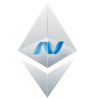

Nethereum Playground will load shortly
- Interact with Ethereum and learn how to use Nethereum directly in your browser
- Integrated Monaco editor, supporting rich IDE features like highlighting, code completion, method information
- The compilation and execution of code does not leave your browser thanks to Mono Wasm and Roslyn
- Ever growing collection of samples in both C# and Vb.Net to learn Nethereum and Ethereum
- Load and save samples to and from the browser local storage or as a file